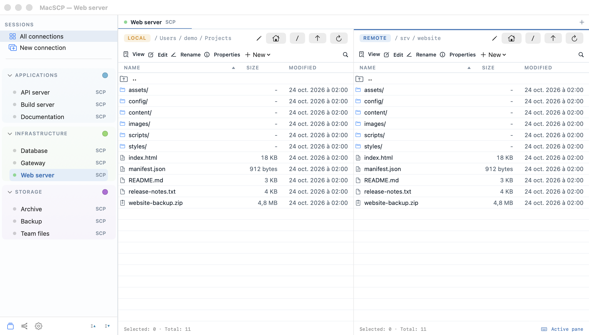
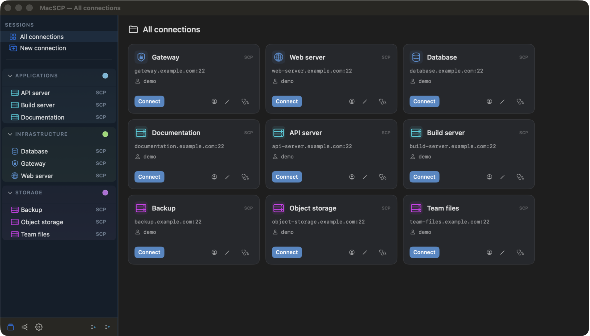
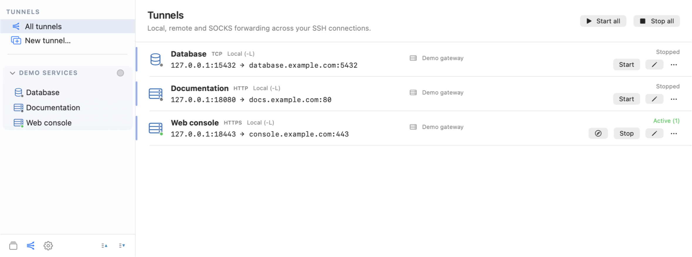

TRANSFER
SFTP, S3 & WebDAV.
Copy files and folders with queues, overwrite/skip/rename choices, cancellation, bandwidth limits and checksums.
macOS 15+ / Apple Silicon + Intel / GPLv3+
VERSION 1.2.1NATIVE TO YOUR MAC
SFTP, S3 and WebDAV in two panes. Your servers in tabs. SSH tunnels in their own workspace.
Version 1.2.1 · macOS 15 or later
For Apple Silicon and Intel Macs.

01 / FILES & CONNECTIONS
Built for everyday file work.
Native macOS controls throughout.
TRANSFER
Copy files and folders with queues, overwrite/skip/rename choices, cancellation, bandwidth limits and checksums.
PAIR TWO REMOTES
Drop one SCP tab onto another. Copy through the Mac without delegating credentials, or on the server when both panes share the same SSH endpoint and account.
EDIT & INSPECT
Edit UTF-8 documents, preview text or hexadecimal data in bounded windows, search SSH folders, or save through your external editor.

Nested groups, searchable icons, reusable logins and custom colors. Interface available in English, French, German, Spanish, Italian, Romanian and Polish.
02 / SSH TUNNELS

Local, remote and SOCKS5 forwarding. Reuse saved SSH connections, one optional jump host and supported TLS-gateway settings.
Start one mapping or a group. Configure automatic startup and reconnection. Keep tunnels active independently of file tabs.
03 / CONNECTIONS YOU UNDERSTAND
Keychain storage. Explicit host-key trust. Readable diagnostics.
Unknown SSH host keys require confirmation. Changed keys stop the connection. Diagnostics check the configured endpoint and jump, and trace failed connections when useful.
Connected sessions can show server information and run an on-demand upload/download test in Mbit/s. Open an external SSH terminal whenever you need a shell.
MacSCP is an independent RetroTools application, not a macOS edition of WinSCP. FTP and SMB are not included.
04 / GET MACSCP
Official installers and release notes are distributed through GitHub Releases, with GitHub provenance attestations and signed Sparkle updates.
The GitHub build is not Apple-notarized. macOS may block the first launch. Check the release page for installation instructions and available downloads.
05 / DOCUMENTATION
Setup, workflows and the limits worth knowing before you connect.
Connections, paired remotes, files, tunnels and diagnostics.
The features included in this release.
Dependency and artwork licenses.
06 / OPEN SOURCE
Consult, compile, modify and publish audit findings under the GPLv3 or later license.
Packaged direct-distribution releases use signed Sparkle feeds and archives. Installation and relaunch require confirmation. Source builds can be rebuilt locally.
No usage analytics or background telemetry. Saved credentials stay in macOS Keychain. The source has undergone static security review and is open for independent audit. Network access serves your configured connections, update checks and optional public-IP discovery on your server. Inspect the source ↗
Use GitHub Issues for ordinary bugs. Include the app version and reproduction steps, and remove credentials and private infrastructure data. For vulnerabilities, follow the security policy rather than posting exploit details publicly.